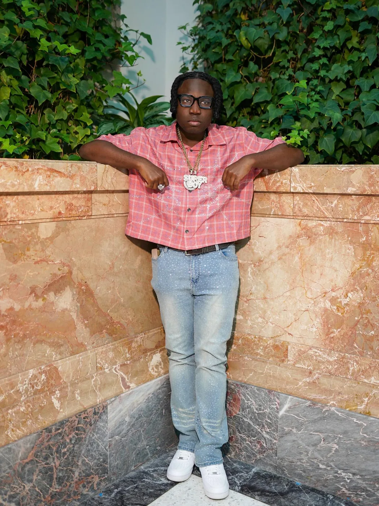
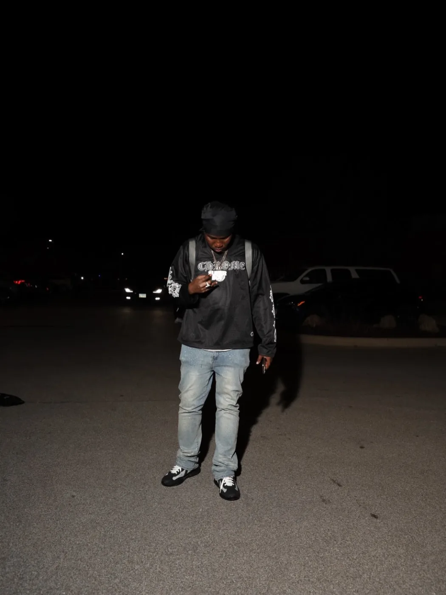

Release Proof
Release Proof
24 Hr In Houston
A release-proof moment turned into a music surface.
Nigerian roots. Chicago grind. Music, media, live moments, and the movement behind the motto: The Grind Don’t Stop.
The visuals are used as chapters: Houston proof, Chicago blocks, rose-room emotion, night-run energy, release covers, and live community surfaces.
A release-proof moment turned into a music surface.

Clean press-ready frames for covers, profile cards, and booking.

Late-night motion, cars, streetlight, and independent grind.
This homepage pushes fans to the right surface: music for listeners, Twitch for live community, story for press, and booking for business.